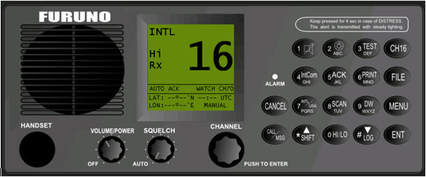

Radiotelefono VHF con DSC Incorporado
Este panel es un mimético simulado del equipo Furuno FM-8500 o FM-8800, según el modelo de radio que se instale en el buque. Contiene los controles y funcionalidad del equipo real.
FM-8500
La funcionalidad del equipo puede consultarse en el Manual de Operador del equipo Furuno FM-8500 que se adjunta como anexo, teniendo en cuenta que las siguientes funciones no se han implementado.
FM-8800

La funcionalidad del equipo puede consultarse en el Manual de Operador del equipo Furuno FM-8500 que se adjunta como anexo, teniendo en cuenta que las siguientes funciones no se han implementado.
Acceso al botón Distress
Como en la radio real, para pulsar el botón Distress, hay que levantar primero la tapa. Sitúe el cursor sobre la tapa y pulse el botón derecho del ratón para levantarla, manteniendo pulsado el botón derecho, sitúe el cursor sobre el botón Distress y pulse el botón izquierdo del ratón.